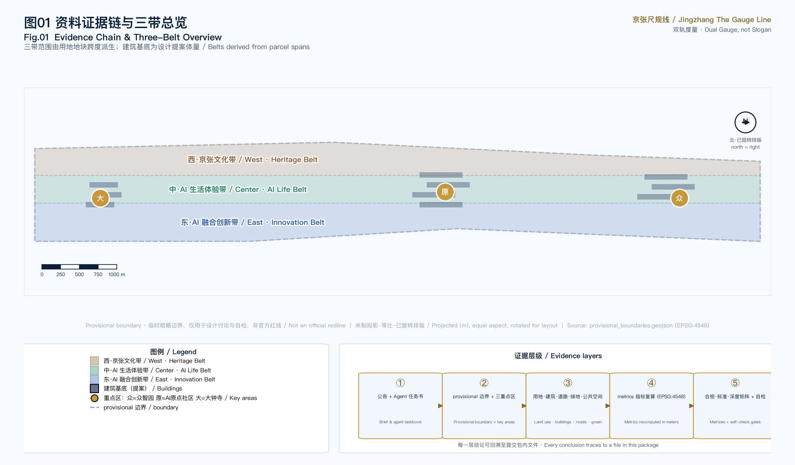
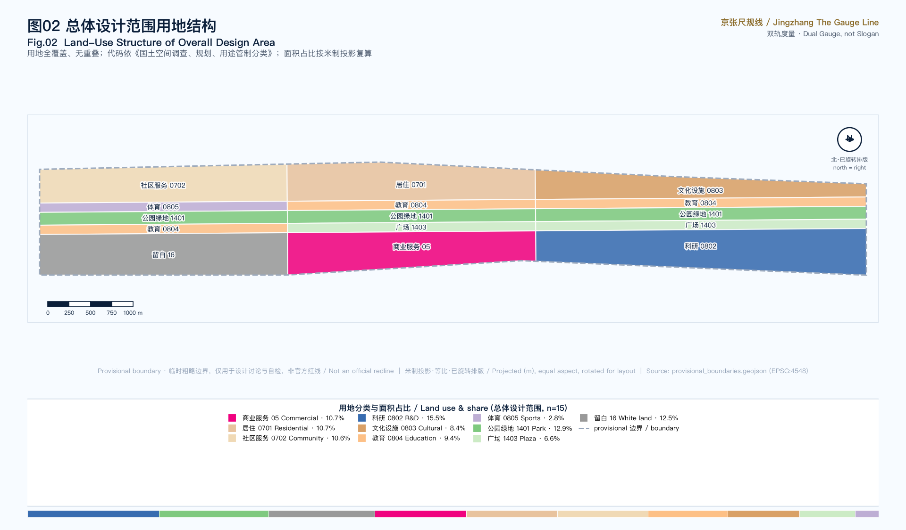
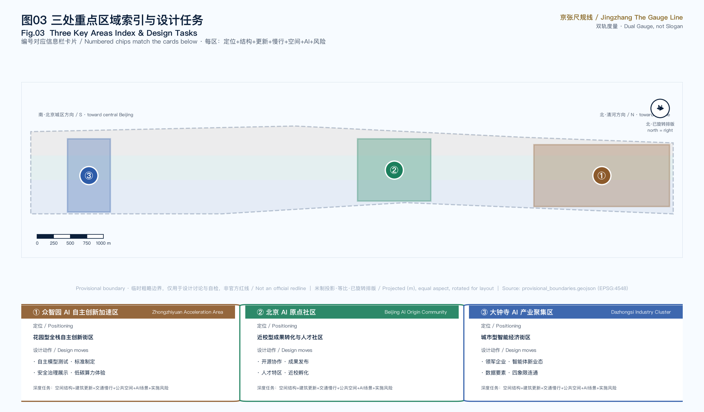
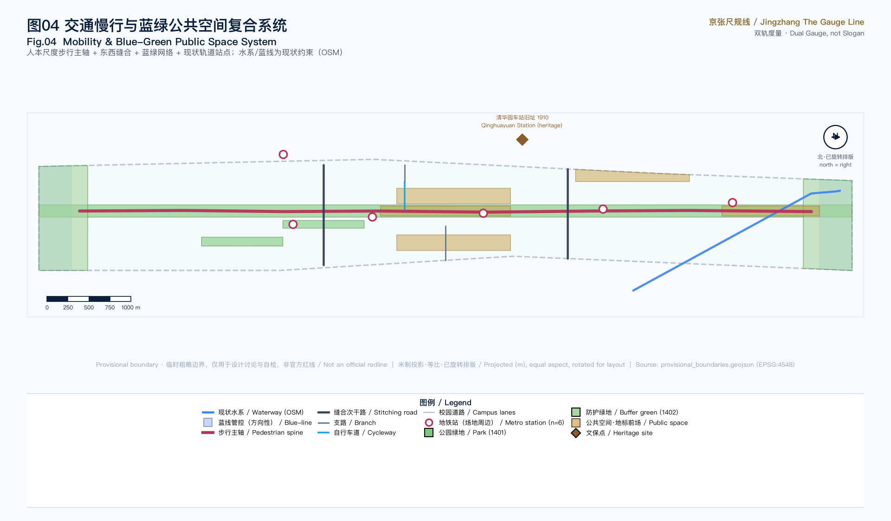
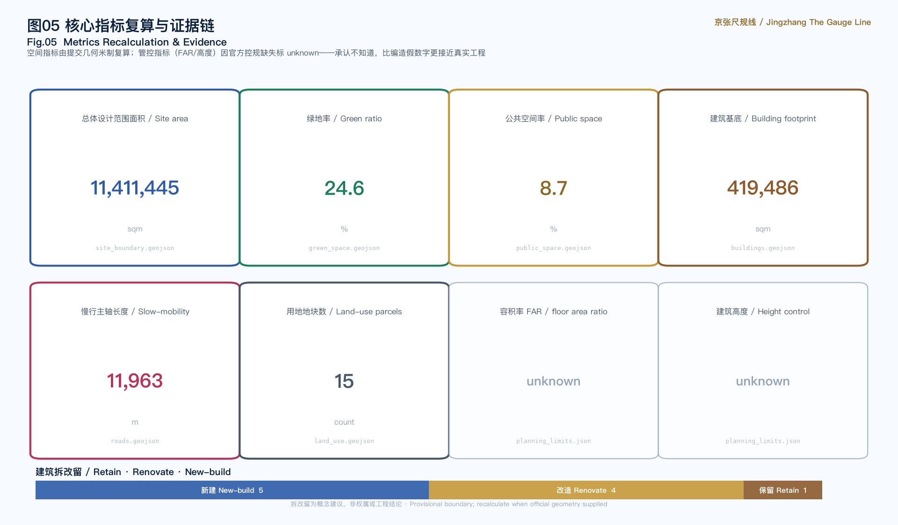

京张尺规线 / Jingzhang The Gauge Line
不写又一条软件带，做一条可被丈量、可被走入、能落地的真实空间带——把 AI 从概念口号翻译成用地比例、街道断面、公共空间尺度和建筑更新动作。
京张尺规线 / Jingzhang The Gauge Line
母题：双轨度量（Dual Gauge, not Slogan）。 京张铁路是中国人对"精确工程"的第一次掌握——詹天佑的人字形展线，是把地形难题翻译成可施工的几何解。一百年后，AI 城市设计也该回到"可施工的几何"：不是又一个开源协议，而是每一条街、每一块地的尺度判断。但 AI 时代引入第二把尺子：智能体的感知半径、服务半径与决策时延，同样必须在空间上可丈量、可落位、可复核。 本方案把两把尺子合成"双轨度量"：空间尺度回答"地怎么用"，AI 尺度回答"智能怎么分布、边界怎么设、复核点在哪"——缺一不可。
设计依据与资料清单
本方案以北京市规划和自然资源委员会海淀分局发布的《百年京张AI创新带城市设计国际方案征集资格预审公告》为第一依据 来源，并以面向智能体任务书 来源 与 brief/site-package/ 中经维护者登记的临时粗略边界、枚举、指标和来源清单为机器可读依据 来源。AI agent 在生成方案前读取了 design_brief.json、allowed_design_space.json、sources.json、enums/、ranges/planning_limits.json、schemas/ 与 data/source_registry.json 来源，并用 data/processed/agent_fact_pack.md 建立任务、范围、资料用途和缺口清单 来源。
资料使用边界明确：官方公告、agent 任务书属 formal-ready 来源；provisional_boundaries.geojson 为 provisional 来源，仅用于临时生成、自检与设计讨论 来源；OSM 等基础现状数据按 ODbL 归属要求仅作背景。本方案所有涉及建设强度、建筑高度、道路红线、拆改留、文保控制的内容，均写作"概念建议 / 参考方案 / 待正式控规确认"，绝不伪装为官方审定结论 深度。

边界状态说明： 官方 SITE_BOUNDARY 与三处 KEY_AREA polygon 尚未取得，本方案使用 provisional_boundaries.geojson 生成临时 formal 包 来源。提交包中的 geometry/site_boundary.geojson 与 geometry/key_areas.geojson 均标注为 provisional_constraint、official_boundary=false。该组织方数据缺口本身不阻断内容评分；替换 official polygons 后，site boundary、key areas、land use、roads、green space、public space、buildings、phasing 与 metrics 均需重算 指标。边界证据可回到总体范围图层 空间数据。
三层范围工作框架
方案按公告确定的三个层次组织工作，把抽象的"三层范围"翻译成可丈量的工作对象：
| 层级 | 范围 | 设计问题 | 方案回答 | 数据落点 |
|---|---|---|---|---|
| 统筹研究范围 | 43.6 km² | AI 产业生态与未来城市形态 | "高校策源—开源协作—企业转化—公共体验—国际传播"创新链 | compliance_matrix.json |
| 总体设计范围 | 11.4 km² | 产业空间、城市更新、交通市政、风貌 | 三纵带用地结构 + 慢行主轴 + 蓝绿网络 | 空间数据 |
| 重点区域范围 | 368.4 公顷 | 三处片区如何达到详细设计深度 | 每区：定位+空间结构+拆改留+交通+公共空间+AI场景+风险 | 空间数据 |
三层工作不是割裂的图纸集合。统筹研究决定产业链和城市形态判断，总体设计把判断落实到更新项目、空间结构和设施承载，重点区域详细设计验证具体地块、建筑、交通、公共空间与 AI 场景的可实施性。任何无法从结构化数据复算的面积、比例、规模或项目数量，不写入正式结论 深度 深度。

本方案的核心空间判断是"三纵带"结构：把总体设计范围沿东西方向分为三条南北纵带，分别承载征集的三条主线定位。这不是新画的红线，而是把公告三层范围与三大定位转译为可读的用地组织方法——西带承载"百年京张文化带"（居住、文化、社区服务），中带承载"都市 AI 生活体验带"（遗址公园绿轴、教育、体育、广场），东带承载"AI 融合创新带"（科研、商业服务、留白）。用地多边形由 SITE_BOUNDARY 派生、全覆盖、无重叠，用地代码采用《国土空间调查、规划、用途管制分类》的 07/08/05/14/16 体系 标准。
统筹研究范围产业与未来城市研究
命名与视觉识别
主名：京张尺规线 / Jingzhang The Gauge Line。 "Gauge"（轨距）是铁路工程最根本的尺度单位，也双关"度量标准"——呼应本方案"可被丈量"的主张。三条主线命名为：轨·遗产线（Gauge of Heritage）、度·生活线（Gauge of Life）、量·创新线（Gauge of Innovation），统一在"度量"母题下。视觉方向取铁路工程蓝图与精密刻度尺意象：以深蓝底、铜金刻度、白线网格为基调，避免氛围插画与娱乐化图标 标准。
命名服务于辨识度而非口号：它解释了方案的空间逻辑（一切回到尺度），并与京张铁路的工程遗产形成历史呼应——詹天佑解决的是"如何在给定坡度下让铁路爬上关沟"，本方案解决的是"如何在给定边界内让 AI 真正进入城市的每一块地"。
全球 AI 创新生态案例（agent.2）
本方案梳理了 6 个全球 AI 创新生态案例，提炼可转译为空间与运营机制的经验（均为公开可查案例，非招商承诺）：
| 案例 | 核心经验 | 转译为海淀的动作 |
|---|---|---|
| 硅谷 Sand Hill Road | 资本与高校的地理紧邻驱动成果转化 | AI 原点社区"近校孵化街"，缩短实验室到资本的距离 |
| 深圳湾科技生态园 | 园区即测试场，产业空间与场景开放一体 | 众智园"公共测试场"，把标准制定转化为可参观节点 |
| 慕尼黑 Kunstareal 艺术与科教区 | 高校、博物馆与科技功能的共生 | 京张遗址公园绿轴承载文化叙事与 AI 展示双重身份 |
| 筑波科学城 | 科研-居住-公共服务配套的尺度平衡 | 总体设计范围三纵带的功能比例与人才生活供给 |
| 阿姆斯特丹 Science Park | 开放共享中庭与开发者社区运营 | 开发者散步道、开源成果展示廊、贡献荣誉墙 |
| 新加坡 One-North | 站点一体化与步行优先的园区形态 | 大钟寺站四象限连通、人本尺度步行主轴 |
这些案例说明：世界级 AI 创新生态不是靠算法独大，而是靠"空间供给—场景开放—人才生活—资本邻近"的协同回路。方案把这回路落到三区两翼：众智园（AI 全栈自主创新体系）、AI 原点社区（世界级 AI 创新生态）、大钟寺（智能原生新业态），由中关村科技服务翼（要素全球化配置、资本赋能）和小月河场景赋能翼（AI 场景赋能）支撑 来源 深度。需说明："众智园""北京 AI 原点社区"等名称出自征集任务书命名，其中"众智园"尚无独立权威现实来源、属组织方命名，"AI 原点社区"则对应五道口东升大厦一带的真实已建区域 来源。
海淀 AI 产业基线（官方数据锚定）
方案不凭空设想产业生态，而是锚定海淀已公开的产业基线：海淀 AI 核心产业规模 2822 亿元（2024 年，年增 30%，约占全市 80%），AI 企业约 1900 家，备案大模型 95 款，建成全市首个万 P 级智算集群 来源；海淀在区全国重点实验室 92 家（占全市 63.4%、全国 17.9%），独角兽 51 家 来源。最强规划锚点是 2023 年揭牌的中关村人工智能大模型产业集聚区核心区（约 9.5 平方公里，东至学院路、南至知春路、西至万泉河路、北至清华西路—清华东路）——该核心区与方案总体设计范围高度重合 来源。方案三重点区中的五道口（北京 AI 原点社区）与大钟寺正是海淀 53 平方公里人工智能创新街区的两处官方先导区（2024 年中关村论坛发布）来源——这意味着本方案不是为创新带"凭空选址"，而是为已获官方认定、已具产业势能的先导区做空间深化。所有产业数字为官方汇总统计，非空间数据，引用时已注明年份与口径，不作投资或招商承诺。
未来城市形态研究回答"AI 如何改变工作、生活、学习、交通、公共服务"。本方案的立场是：这些改变最终都要落到空间尺度的改变——远程协作改变了办公空间的密度需求，端侧算力改变了机房与公共服务设施的共生关系，自动驾驶改变了路缘与人行道的分配。方案不泛谈技术愿景，而把这些趋势转译为用地比例、街道断面和公共空间尺度的具体判断。
AI 尺度：第二把尺子的空间投影。 AI 不是均匀弥漫的"数字空气"，它有可测量的运行尺度，本方案把它投影为三类空间判断 深度：
1. 感知半径：智能体依赖的传感器/数据源的覆盖半径决定"感知节点"的布置密度。本方案只在公共空间设置低侵入感知节点（断点、热力、设施状态），感知半径以 300–500 米为单元，聚合输出、不识别个人 空间数据。 2. 服务半径：端侧算力驿站、慢行导航、无人配送的物理服务半径不同——算力驿站 500 米、慢行导航全带、无人配送以驿站为中转的 2–3 公里环。服务半径直接决定设施布点与路权分配，写入场景卡与更新项目 指标。 3. 决策时延与复核点：实时决策（慢行断点提醒）允许秒级自动响应但需留痕；涉及审批、安全、隐私的决策（发布、测试、会商）必须保留人工复核点。复核点的空间落位即"人类在环"的空间化——每个 AI 场景卡都标注其人工复核点 深度。
总体设计范围城市更新与控规深度城市设计
本节是方案差异化的主战场。总体设计范围（11.4 km²）要求达到控制性详细规划的城市设计深度——这正是多数 AI 投稿的薄弱处。本方案给出可审查的空间结构、用地布局、建筑更新与设施承载。
用地结构
用地多边形由 SITE_BOUNDARY 在 EPSG:4548 投影下派生，共 15 个地块，全覆盖、无重叠 深度。用地代码采用 0701（居住）/0702（社区服务）/0802（科研）/0803（文化）/0804（教育）/0805（体育）/05（商业服务）/1401（公园绿地）/1403（广场）/16（留白）体系 标准。三纵带的功能配比体现"度量"判断：创新带以科研用地为骨干，生活带以公园绿地为骨架，文化带以居住+文化平衡人才生活与文脉。留白用地（16）明确标注"待正式控规"，承认数据缺口而非用伪精确数字掩盖 空间数据。
建筑拆改留
建筑基底方案区分三类更新动作：新建（new_build）、改造（renovate）、保留（retain），每栋建筑在 geometry/buildings.geojson 的 renovation_action 字段中标注 深度。例如 AI 原点社区的近校孵化器与开源协作楼标为"改造"（盘活存量），众智园的自主模型实验栋与安全评测实验室标为"新建"（产业供给），大钟寺现状商业标为"保留"。建筑基底总面积可从图层复算 指标；拆改留分类为概念建议，非权属或工程结论。
开发强度与待确认控规
容积率、建筑高度、建筑密度在 site package 中均为 missing，本方案将其标为 unknown，并说明所需来源（审定控规或任务书附件）标准。这是合规边界，也是"双轨度量"方法论中空间尺度的一部分：承认不知道，比编造一个精确的假数字更接近真实工程。方案给出的是方法（如何在校规到位后填充这些指标），而非伪造结论 深度。
重点区域详细设计

三处重点区域是方案落地的关键。每个重点区都形成"定位 + 空间结构 + 建筑更新 + 交通慢行 + 公共空间 + AI 场景 + 实施风险"的可读小方案，引用 geometry/key_areas.geojson 对应 feature 深度。
众智园 AI 自主创新加速区（PROV-KEY-001）
定位： 花园型全栈自主创新街区，承载国家人工智能平台、标准制定、安全治理与低碳算力体验。空间结构： 强化清河界面与对外交通组织，以绿色空间承载开放测试与标准治理展示。建筑更新： 自主模型实验栋、安全评测实验室为新建；低碳算力驿站为新建（端侧算力与公共服务融合原型）。交通慢行： 众智园对外联系支路 + 清河低碳创新廊（步行骑行复合）。公共空间： 开源成果展示廊与公共测试场，把标准制定转译为可参观节点。AI 场景： 自主模型测试、安全治理沙盒、标准制定工作坊。实施风险： 清河蓝线、生态与防洪条件待确认，建筑高度受景观限高约束 空间数据 来源。
北京 AI 原点社区（PROV-KEY-002）
定位： 近校型成果转化与人才社区，承载开源协作、成果发布、人才特区与近校孵化。空间结构： 组织校区、园区、街区慢行缝合，补足成果发布、人才服务、居住生活与开源协作空间。建筑更新： 近校孵化器与开源协作楼为改造（盘活存量），成果发布厅为新建。交通慢行： 近校自行车联络道 + 校区-园区慢行缝合。公共空间： 开发者散步道中庭，承载开源社区日常协作与声誉积累。AI 场景： 开源发布厅、近校成果转化街、人才生活管家。实施风险： 校区边界、权属、首层业态待确认 空间数据。
大钟寺 AI 产业聚集区（PROV-KEY-003）
定位： 城市型智能经济与国际交往街区，承载领军企业、智能体新业态、内容消费与数据要素。空间结构： 围绕大钟寺站一体化、四象限步行连通、商业服务与重点企业公共环境更新。建筑更新： 现状商业保留，智能终端展示楼改造，数据要素会客厅新建。交通慢行： 大钟寺站四象限接驳支路 + 步行连通。公共空间： 智能体贡献荣誉墙前场，服务展示、洽谈与媒体发布。AI 场景： 国际路演客厅、数据要素会客厅、智能终端展示。实施风险： 轨道站点、道路交叉口、市政管线待确认，企业标识与案例须清权 空间数据 指标。
AI 创新生态、人才画像与 AI+ 场景
沿线教育资源基线（agent.3 人才画像的真实支撑）
本方案的"近校成果转化"与人才画像建立在沿线真实的教育资源密度上：基于 OpenStreetMap 现状数据（ODbL，2026-08-10 获取），方案走廊范围内集聚 19 所高校与科研机构，包括清华大学、北京大学、北京邮电大学（双一流：信息与通信工程/计算机）、北京航空航天大学（双一流：控制/计算机/软件）、北京科技大学、中国地质大学、北京林业大学、中国农业大学、中国科学院大学中关村校区等 来源 来源。这印证了"北京 AI 原点社区"选址的真实逻辑——五道口—学院路一带本就是全国最密集的高校与 AI 人才策源地之一。"近校孵化街""开发者散步道"等空间动作不是凭空设计，而是为这些既有人才与成果转化需求提供可走入的容器。坐标已写入 geometry/roads.geojson 的 SCENARIO_NODE 节点 指标。
五类用户画像（agent.3）
| 用户画像 | 典型需求 | 空间响应 | 隐私边界 |
|---|---|---|---|
| 开源开发者 | 发布、协作、测试、社区声誉 | 原点社区开源发布厅、开发者散步道、夜间协作空间 | 不采集个人行为轨迹；活动数据仅聚合统计 |
| 初创团队 | 低成本办公、算力入口、产品试验场 | 众智园共享测试场、端侧算力驿站 | 算力与数据服务需另行授权 |
| 头部企业访客 | 展示、商务、国际接待、招聘 | 大钟寺国际路演客厅、轨道接驳、企业周边公共空间 | 企业标识与案例须清权 |
| 周边居民 | 通勤、休闲、社区服务、低扰动更新 | 京张遗址公园慢行环、社区服务嵌入、夜间照明分级 | 不将居民画像用于商业推荐 |
| 高校师生 | 成果转化、跨校协作、日常慢行 | 校区-园区慢行缝合、成果转化驿站、AI 教育体验点 | 校园数据与科研成果需授权 |
多智能体协作治理：一带的"智能体运行协议"（agent.3 深化）
AI 原生不是"给每个设施装一个 AI"，而是多个智能体在同一空间里协作时必须有一致的运行协议。本方案提出"一带多智能体协作治理框架"，把智能体分为四类角色，各自有明确的数据边界、空间落位与人工复核点 深度：
| 智能体角色 | 职责 | 数据边界 | 空间落位 | 人工复核点 |
|---|---|---|---|---|
| 感知智能体 | 慢行断点、公共空间热力、设施状态监测 | 低侵入聚合感知，不识别个人、不采集轨迹 | 公共空间低侵入节点（300–500m 单元） | 感知点位清单定期人工巡检 |
| 服务智能体 | 慢行导航、设施维护工单、无人配送调度 | 仅使用公开/授权数据；不输出个人画像 | 端侧算力驿站、慢行主轴、路缘交接点 | 调度建议须留痕，重大改线人工确认 |
| 治理智能体 | 安全复核、合规审计、能耗调控 | 只读聚合数据；审计日志可追溯 | 众智园安全治理沙盒、数据要素会客厅 | 模型红队测试可预约可监管，结果人工会审 |
| 运营智能体 | 活动编排、场景调度、贡献荣誉记录 | 活动报名等授权数据最小化 | 大钟寺运营客厅、开源发布厅 | 发布内容与活动安排人工审核 |
四条运行协议约束所有智能体：（1）数据最小化——只采必要聚合数据，感知不识别个人；（2）人类在环——涉及审批、安全、隐私、执法的决策必须保留人工复核点，智能体只建议不代决；（3）可解释留痕——所有自动决策可追溯、可审计，日志向运营主体开放；（4）不替代法定程序——智能体输出不构成规划审批、文保、权属或工程结论 来源。本框架的治理原则与任务书 agent.3 的隐私与人工复核边界一致，任何场景都不得以智能体名义绕过上述协议。
AI 场景卡（≥10 张，其中 ≥3 张测试验证场景）
每张场景卡标注"感知→决策→行动"的 AI 闭环与人工复核点，把"AI 原生"落实为可审查的运行结构——不是贴 AI 标签，而是明确智能体在什么空间里、用什么数据、做什么决策、谁来复核：
| # | 场景卡 | 空间载体 | 类型 | AI 闭环（感知→决策→行动） | 人工复核点 |
|---|---|---|---|---|---|
| 01 | 开源发布厅 | AI 原点社区 | 体验 | 聚合贡献数据→社区声誉模型→发布台与荣誉墙展示 | 发布内容人工审核；贡献数据仅聚合 |
| 02 | 安全治理沙盒 | 众智园 | 测试验证 | 红队输入→风险评估模型→隔离沙盒运行 | 红队测试可预约可监管；结果人工会审 |
| 03 | 端侧算力驿站 | 总体范围节点 | 测试验证 | 能耗/负载遥测→负载调度模型→边缘推理节点分配 | 算力服务需授权；能耗数据公开 |
| 04 | 自主模型测试场 | 众智园公共测试场 | 测试验证 | 公开测试集→评测模型→测试场地展示 | 测试数据隔离；评测结果人工确认 |
| 05 | AI 慢行导航 | 遗址公园活力带 | 体验 | 低侵入断点传感→断点识别→导航与设施工单 | 断点工单人工复核；不追踪个人 |
| 06 | 大钟寺国际路演客厅 | 大钟寺片区 | 体验 | 报名/议程数据→议程推荐模型→路演与同传 | 企业标识清权；商务数据不公开 |
| 07 | 清河低碳创新廊 | 众智园临清河界面 | 体验 | 环境监测→碳排放核算→廊道展示 | 环境数据公开；个人行为不采集 |
| 08 | 近校成果转化街 | AI 原点社区 | 体验 | 公开成果库→匹配推荐模型→转化驿站对接 | 知识产权与科研成果授权使用 |
| 09 | 数据要素会客厅 | 大钟寺片区 | 体验 | 合规登记数据→流通留痕模型→会客厅终端 | 合规授权可审计；流通全程留痕 |
| 10 | AI 生活服务样板街 | 社区与商业交汇 | 体验 | 公开服务信息→服务匹配模型→样板街终端 | 医疗教育法律场景人工复核 |
| 11 | 京张记忆线路 | 一带公共空间系统 | 体验 | 历史资料库→叙事编排模型→沿线导视 | 历史资料授权；肖像商标清权 |
| 12 | 全球 AI 活动周路线 | 一带公共空间系统 | 体验 | 活动日历→路线编排模型→导视与动线 | 活动安全分级；版权清权 |
所有场景均落到具体图层与节点：公共空间场景引用 空间数据，慢行与交通场景引用 空间数据，开放空间场景引用 空间数据，治理与安全场景引用 空间数据。AI 治理建议遵守数据最小化、公开来源、可解释与人工复核原则，城市智能体辅助识别慢行断点、公共空间热力与设施维护需求，但不替代规划审批、不输出未经授权的个人画像 指标。
用地、建筑规模与拆改留方案
用地布局依据国土空间用途管制分类表达，形成完整、闭合、无缝的用地分区。建筑方案区分保留、改造、新建三类，明确基底、功能、风貌、屋顶、体量与高度控制的建议层级。若缺现状建筑、权属、控规与工程条件，方案只提出方法与待校准清单，不编造拆改留结论 标准 深度。
用地与建筑的主要证据为 空间数据、空间数据 与 指标。建筑规模与强度指标与 metrics.json、图层一致；总建筑规模、容积率、建筑高度、建筑密度、绿地率、退线与建筑控制线缺少官方条件时，在指标体系中列为 unknown 或 pending_control，不用固定数值制造精确感。
交通、轨道、市政与公共服务设施

交通方案的核心是"人本尺度步行主轴"——一条贯穿遗址公园绿轴的南北慢行主轴（pedestrian），叠加两条东西缝合次干路（secondary），把被铁路和环路切割的东西向重新连通 深度。这与多数 AI 投稿把交通简化为"自动驾驶+数据"形成对比：本方案认为，在 AI 时代，街道首先属于步行者的身体尺度，智能化是服务这个尺度的手段而非替代。慢行主轴的选线锚定沿线真实现状轨道站点：基于 OSM 现状数据，走廊内有 12 个地铁站点（大钟寺、蓟门桥、知春路、知春里、西土城、五道口、学院桥、六道口、清华东路西口、北沙滩、学知园、清河小营桥）来源，慢行主轴与站点接驳构成"轨道+步行"可达骨架，大钟寺站四象限连通有真实客流基础 指标。骑手/网约车/快递的运营体量参考美团（月活骑手 336 万）与滴滴出行公开报告的汇总统计 来源 来源，用于支撑 AI 生活服务样板街与无人配送场景——此为全国汇总级背景数据，非廊道实测客流。
道路与慢行图层保持在提交边界内，与公共空间、绿地、产业节点和重点片区相互校核。重点覆盖北五环跨环路节点、五道口、清华东路西口、大钟寺站及重点企业周边交通联系。当道路红线、管线、消防与市政条件缺失时，通过 assumptions 说明待补 深度 空间数据。
市政与公共服务设施覆盖 AI 产业服务、创新平台、人才生活服务、新型基础设施、分布式能源、端侧算力与传统市政融合。端侧算力驿站作为"待深化的新型基础设施原型"，把算力从封闭机房转译为可进入公共服务设施的可见节点。缺少管线、能源、排水、防洪、消防资料时，列为正式深化前置条件。
蓝绿空间、公共空间与城市风貌
蓝绿空间以京张遗址公园活力带为骨架，统筹清河、小月河与周边高校、企业、社区出行需求，提出南北贯通、东西连通的步道、骑行道与绿色空间体系。绿地含京张遗址公园绿轴（连续公园绿地）、清河/小月河防护绿地与邻里公园 空间数据 指标。绿地率 24.6% 支撑人才生活与创新交往——这个数字是从图层复算的，不是口号 深度。骨架基于真实要素：京张铁路遗址公园官方全长约 9 公里（南起西直门/北京北站、北至北五环，二期 2026-08-06 全线开放，总用地约 53 公顷，服务约 70 个社区、45 万居民），其空间来自京张高铁五环内入地（清华园隧道）后腾退的原地面铁路 来源 指标；小月河、万泉河、清河等现状水系坐标已写入 geometry/constraints.geojson（基于 OSM 现状数据，ODbL）来源，作为滨水慢行设计的现状依据——法定蓝线仍以官方水务数据为准，本方案只把现状水系用于设计讨论与可视化。
AI 朝圣地标与荣誉展示体系（agent.4）
本方案提出 3 个以上 AI 朝圣地标 / 荣誉展示节点，呼应征集"让贡献者的 GitHub ID 刻上京张铁路遗址公园"的纪念体系愿景：
1. 京张起点广场（PUBLIC-001）：朝圣地标前场，人本尺度集会空间，承载全球 AI 活动周开幕。 2. 智能体贡献荣誉墙（PUBLIC-004）：大钟寺前场，记录杰出 Agent 与贡献者，与开发者社区和公共空间系统关联。 3. 开源成果展示廊（PUBLIC-002）：众智园，把开源代码贡献与标准制定转译为可漫步的展示界面。 4. 百年里程碑广场（PUBLIC-005）：京张终点，詹天佑工程遗产与 AI 新文化的时空对话节点。
地标、导视、Logo、字体、图像、人物与企业标识必须清权，不过度娱乐化、不把概念地标写成已批准建设 标准。城市风貌融合京张铁路历史文化、中关村创新文化与 AI 新文化，锚定真实文化资源：清华园车站旧址是北京市第九批市级文物保护单位（2023 年公布），1910 年建成、詹天佑亲题站名"清华园車站"、1949 年"进京赶考"第一站 来源；大钟寺（觉生寺）是第四批全国重点文物保护单位（1996 年），现为大钟寺古钟博物馆 来源。"百年里程碑广场"与"开源成果展示廊"的设计应对接这两处文保的文化分量，提出城市基调、建筑风貌、屋顶形态、体量、界面与公共艺术引导；文保建设控制地带以官方文物数据为准，本方案只在 geometry/constraints.geojson 给出方向性定位 空间数据。
更新项目清单、实施政策与分期计划
| 项目编号 | 项目名称 | 类型 | 主要依赖 | 证据引用 |
|---|---|---|---|---|
| JZ-01 | 遗址公园慢行主轴与断点缝合 | 公共空间/交通 | 道路红线、桥下空间、交通组织复核 | 空间数据 |
| JZ-02 | 众智园清河创新界面 | 蓝绿空间/产业展示 | 河道蓝线、生态与防洪条件 | 空间数据 |
| JZ-03 | 原点社区近校成果转化街 | 城市更新/产业服务 | 校区边界、权属、首层业态 | 空间数据 |
| JZ-04 | 大钟寺站四象限步行连通 | 轨道一体化/慢行 | 轨道站点、交叉口、市政管线 | 空间数据 |
| JZ-05 | AI 公共服务与端侧算力节点 | 新基建/公共服务 | 能源、算力、安全、运营主体 | 空间数据 |
| JZ-06 | 全球 AI 活动周公共路线 | 运营/品牌 | 公共空间许可、活动安全、版权清权 | 空间数据 |
分期与 100 天征集设计周期区分：征集周期是提交成果的时间要求，实施分期是城市更新与项目建设的推进路径。方案提出近期试点（遗址公园慢行主轴与公共空间激活）、中期更新（AI 原点社区近校孵化与开源协作）、长期治理（众智园与大钟寺产业深化）深度 深度。
全球 AI 创新活动体系与长期运营（agent.6）
年度活动体系包含：全球 AI 活动周（开幕于京张起点广场）、开发者节（开发者散步道）、场景开放日（众智园公共测试场）、竞赛路演（大钟寺国际路演客厅）与城市体验路线（京张记忆线路）。活动品牌延续"尺规线"视觉系统；开发者社区运营依托开源发布厅与贡献荣誉墙；场景开放运营依托公共测试场与端侧算力驿站。所有活动、招商、资金、政策与运营安排均写作概念建议或深化方向，不表述为已确定政府安排 来源。
指标体系、面积复算与合规矩阵
指标分三类，避免把运营愿景误写成审定规划条件。第一类（可由提交几何复算的空间指标）：总体范围面积、绿地比例、公共空间比例、建筑基底面积、慢行主轴长度、用地地块数、拆改留计数 深度。第二类（需官方控规支撑的管控指标）：容积率、建筑高度、建筑密度、退线、道路红线、设施标准——在 site package 中为 missing，标 unknown 标准。第三类（需运营数据校准的绩效指标）：AI 创新指数、人才密度、活动参与度、场景使用频次——列为待运营数据接入。

核心指标：总体设计范围面积 11,411,445 sqm、绿地率 24.6%、公共空间率 8.7%、建筑基底 419,486 sqm、慢行主轴总长 11,963 m、用地地块 15、重点区 3 处 指标 指标。第三方数据锚定指标：沿线高校 19 所、现状地铁站点 12 个、遗址公园全长 9 公里、海淀 AI 核心产业 2822 亿元、大模型集聚区核心区 9.5 km²、在区全国重点实验室 92 家 指标 指标。AI 原生性指标：场景卡 12 张（含 3 张测试验证）指标。完整数值与公式见 metrics.json。
合规矩阵覆盖公告 1.3、1.4、1.5 与 agent.1–agent.6 的全部必选任务，每条任务对应报告章节、图层、指标、图纸、HTML 页面、来源、假设与自检项。
风险、版权与合规说明
本方案基于官方公开资料与 provisional 边界，不声称官方批准、审定控规、最终土地权属、最终建设规模或保证实施。AI agent 对事实、来源、版权、空间数据、指标与表达负责；维护者与专业评审可依据自检结果、空间复核与合规矩阵要求返修或拒绝 深度 空间数据。
第三方数据合规边界： 本方案使用 OpenStreetMap（ODbL 1.0，已署名 © OpenStreetMap 贡献者，share-alike）作为现状地理要素的 base layer，仅用于背景与设计讨论，不升级为 official boundary/法定蓝线/文保线；使用北京市科委、海淀区统计局、北京市文物局、教育部等官方公开统计/文保事实，引用时注明发布者、URL、年份与口径；使用美团、滴滴公开报告的全国汇总级数字作为场景体量背景，非廊道实测数据；北京市公共数据开放平台（71 家单位 4457 个数据集，含教育/交通/地理信息主题）作为后续校准的数据资源索引 来源 来源。商业地图实时热力/瓦片因无公开许可、未使用。所有第三方数据来源、许可、用途与限制登记于 sources.json。
双语要求： 方案主文件为中文，通过 proposal.en.md 提供完整对照译文；A3/A0、HTML 与含文字图件提供对应语言副本，优先使用赛事中英术语表。所有图片、图纸、图标、数据与代码资产在 sources.json 与 report/copyright_statement.md 中说明来源、许可与授权状态。HTML 页面不加载远程脚本、远程地图瓦片、远程字体、iframe、表单或外部 API，不跟踪评审者行为。
主要数据缺口与待确认事项： 官方 SITE_BOUNDARY、三处 KEY_AREA polygon、容积率、建筑高度、建筑密度、道路红线、权属、市政、文保控制线与工程条件均为 missing，已在 assumptions.json 与 metrics.json 中标注为 unknown/pending。provisional 边界下所有空间结论为方向性设计，待官方数据发布后复算。
参考资料
- brief/public-brief.md — 公开任务书草案
- brief/site-package/agent_taskbook.json — 面向智能体任务书
- brief/site-package/allowed_design_space.json — 允许设计空间与图层策略
- brief/site-package/ranges/planning_limits.json — 已知面积与待补控规条件
- data/source_registry.json — 公开资料登记表
- data/processed/agent_fact_pack.md — agent 可读导航层
- OpenStreetMap（ODbL，2026-08-10）— 沿线高校/地铁站点/水系现状坐标（base layer）
- 北京市科委 / 海淀区统计局 — 海淀 AI 产业与经济统计（2822 亿/1900 家/92 家国重等）
- 北京市文物局 — 清华园车站旧址（市级文保）、大钟寺（国保）文保事实
- 北京市发改委 / 科技日报 — 京张铁路遗址公园（9 公里/53 公顷）公开信息
- 教育部 — 第二轮双一流名单（沿线高校学科）
- 美团 / 滴滴企业出行报告 — 骑手/网约车汇总统计（场景背景）
- 完整机器索引：见
sources.json、metrics.json、compliance_matrix.json、standard_matrix.json、design_depth_matrix.json来源